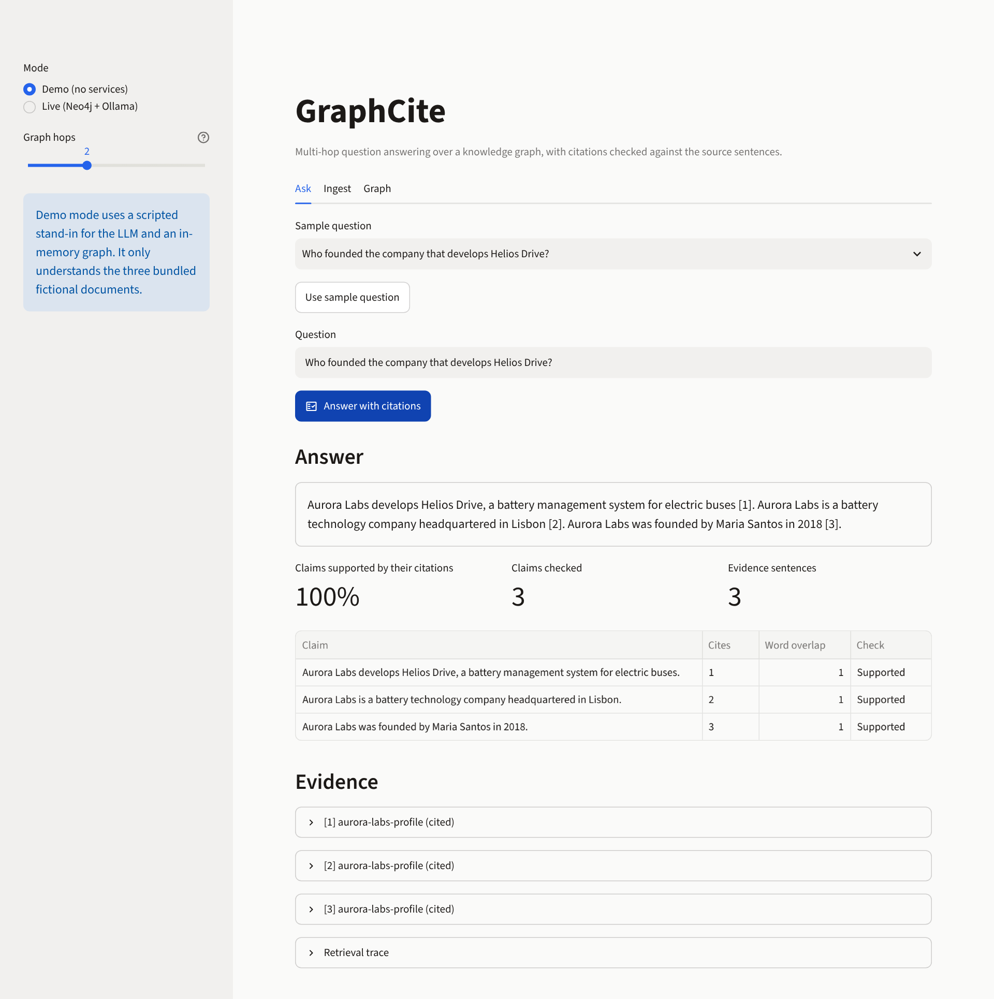
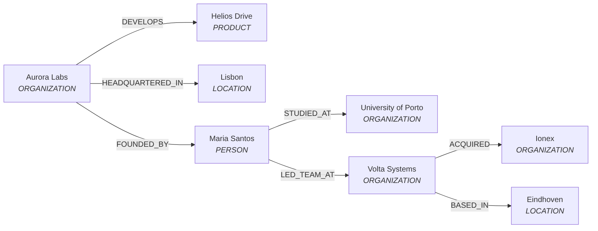

GraphCite
Multi-hop question answering over a knowledge graph, with citations that are checked rather than trusted.
Documents become a Neo4j knowledge graph; questions are answered by walking the graph across documents; every statement in the answer is then verified against the numbered source sentences it cites. By Madhur Kumar Rana.
This page is a showcase. The full app needs Neo4j and a local Ollama model; a no-services demo mode (scripted stand-in model, bundled fictional documents) runs with python -m graphcite.demo or streamlit run app.py.
The interface
Demo mode, answering a two-hop question. Every claim in the answer is checked against the numbered source sentence it cites.

The idea
Some questions span documents: "Which company did the founder of Aurora Labs work for before, and what did that company acquire?" needs a chain of facts from three sources. GraphCite merges entities across documents and expands from the entities named in the question, so each hop carries the sentence it came from.

Graph built from three fictional demo documents.
What makes the citations verifiable
- Grounded extraction: the model must quote the supporting sentence for every entity and relation; ungrounded items are dropped and reported.
- Provenance on every edge: each relation stores its source document and sentence.
- Post-hoc verification: each answer sentence must cite existing evidence, and the cited text is checked for word-level support. Uncited, mis-numbered and unsupported statements are flagged.
Run it
git clone https://github.com/madhur0770/GraphCite.git
cd GraphCite
python -m graphcite.demo # no dependencies, no services
pip install -r requirements.txt
streamlit run app.py # demo mode by defaultLive mode: docker compose up --build starts the app and Neo4j; point it at a local Ollama model.
Engineering evidence
- 67 tests: extraction grounding, store contract, retrieval, citation verification, pipeline, UI smoke, repository hygiene.
- The same store contract tests run against the in-memory store and a real Neo4j in CI.
- CI on Ubuntu and Windows, plus Compose validation and a Docker image build.
Known limitations
- Matching and verification are lexical: no embeddings, no entailment, no coreference resolution.
- The Ollama path and real-model answer quality are not covered by automated tests.
- Demo mode uses a scripted stand-in for the model and only knows the bundled documents.